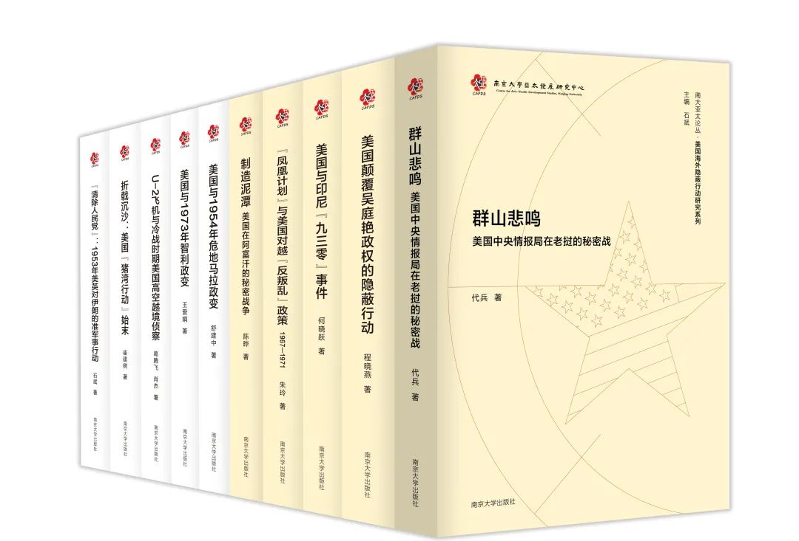
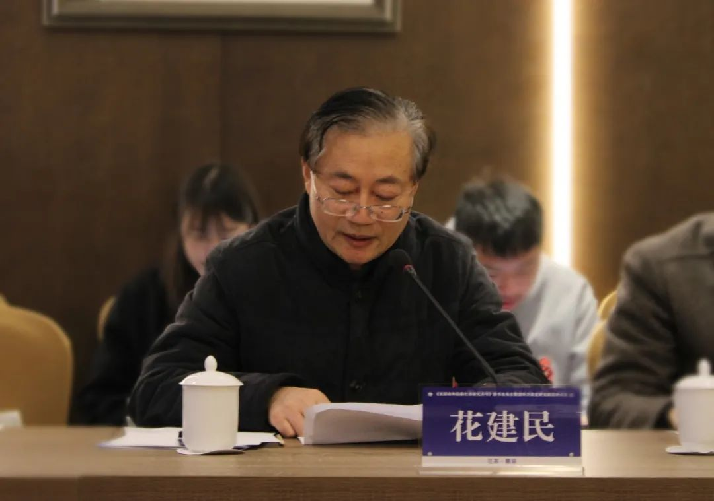
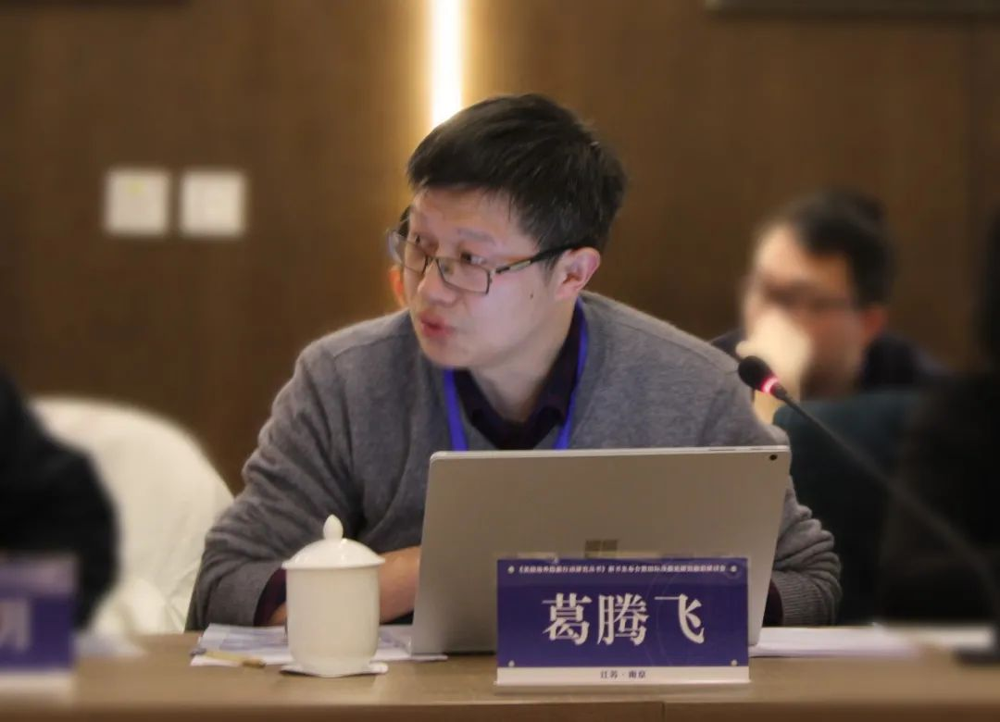
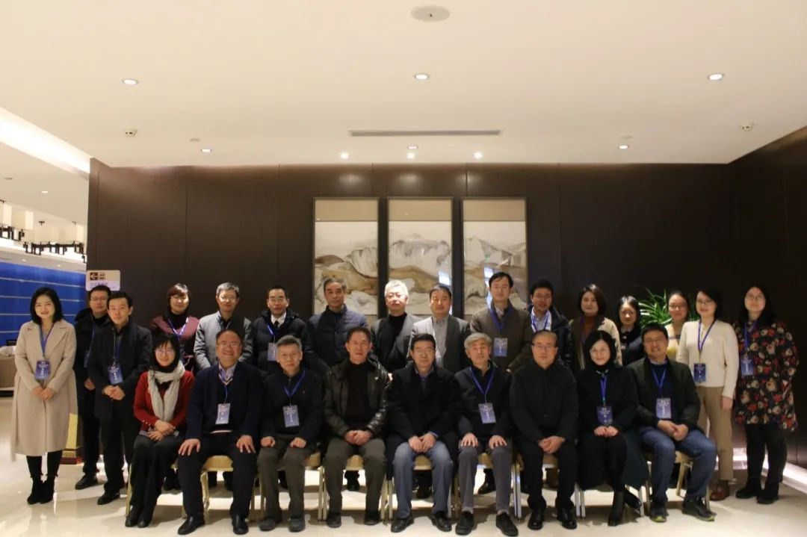

收录于合集
2020年12月19日上午，由南京大学亚太发展研究中心和南京大学出版社联合举办的“美国海外隐蔽行动研究系列”丛书第2辑5本新书发布会暨国际冷战史研究前沿研讨会在南京大学仙林校区召开。 来自南京大学、北京大学、国防科技大学、中共中央党校（国家行政学院）、南京师范大学、陕西师范大学、苏州大学、海军指挥学院、陆军工程大学、南京林业大学、南京财经大学、江苏省社会科学院和中共江苏省委党校（江苏行政学院）及国内智库的30余位专家，丛书第2辑部分作者及南京大学社会科学处、南京大学出版社的相关领导参加了本次新书发布会。

开幕致辞
南京大学社会科学处副处长刘颖 首先对新书发布表示祝贺。她指出，南京大学高度重视区域国别研究和跨学科研究，南京大学亚太发展研究中心便是在跨学科和区域国别研究方面的一种探索。经过近五年的发展，该中心已经成为南京大学最为活跃的学术研究机构之一，亚太中心研究团队近年来陆续发布了一系列具有重要影响的标志性研究成果，为回应国家战略需求和学科发展做出了积极贡献。刘颖副处长表示社会科学处将一如既往地支持亚太发展研究中心的学术研究活动，并勉励研究团队继续努力创造更多成果。

南京大学出版社 社长助理 兼党总支副书记花建民对“美国海外隐蔽行动研究系列”新书发布表示祝贺，并感谢南京大学亚太发展研究中心对南京大学出版社的支持，过去几年来双方已经合作打造了“美国海外隐蔽行动研究系列”“美国内政与外交研究系列”“南大亚太论丛”“南大亚太译丛”“学人文丛”和多本学术集刊等学术项目，以及获得“十三五”国家重点出版物规划和国家出版基金两项重要支持的10卷本专著《新兴大国崛起与全球秩序变革》。他指出，南京大学亚太发展研究中心已经成为具有重要学术影响和鲜明学术特色的研究机构，推动了南京大学国际问题研究的进一步发展。他希望双方能够进一步深入合作，共同打造更多的标志性成果。
南京大学亚太发展研究中心主任、“美国海外隐蔽行动研究系列”丛书主编石斌教授 向各位与会专家和丛书作者表示感谢，也向南京大学社科处和南京大学出版社的大力支持表达敬意。他指出，国际竞争包括公开与隐蔽两个层面，仅仅关注公开层面，显然难以了解国家间关系的全貌。隐蔽行动是国际学术界尤其是外交史、国际关系史、国家安全情报史研究的重要内容，也是方兴未艾的国家安全学学科建设的重要基础性内容之一。丛书顺应时代发展的需求和国际冷战史研究的发展趋势尤其是其中的“文化与社会转向”，致力于充分发掘和利用第一手最新解密文件，深入探讨美国在世界各地所开展的各类隐蔽活动，包括隐蔽政治活动、宣传活动、经济活动以及准军事行动等，进一步拓展冷战史、国际关系史和国际安全研究的学术视域，深化对于各类双边、多边国际问题以及大国竞争模式的认识。据石斌教授介绍，丛书明年还将出版10余本著作，目前已规划30余种，并将进一步拓展研究范围，将“文化冷战”、高技术竞争、网络时代的信息竞争以及其他国家的相关内容纳入研究范围。
新书分享
《群山悲鸣：美国中央情报局在老挝的秘密战》作者代兵教授 介绍了自己的研究和写作经验。他指出，美国在老挝的秘密战使30万人民的家园近乎摧毁。隐蔽行动研究最大的问题是材料挖掘，他建议学者们应该注重档案的交叉使用。他在研究中灵活运用了中央情报局有关档案中的老挝卷与越南卷、基于难民采访的口述史、相关博士论文、美国航空公司飞行档案等。《群山悲鸣》在写作方面采用了较为轻快活泼的风格，展现引人入胜的历史写作。代兵教授强调，印支战争是用兵频率最高的战争，事关中国的周边安全，因此具有一定的现实意义。
《美国颠覆吴庭艳政权的隐蔽行动》作者程晓燕教授 阐述了该选题的创新之处。她指出，该书虽聚焦冷战，但又超越一般的大国博弈的视角，试图展现其中的越南属性。与此同时，她也强调对吴庭艳这个人物形象的重新塑造，并依据美国中情局等资料重新评价了吴庭艳政权的一些政策问题。她还简要介绍了美国中情局在越南隐蔽行动操作方面的特殊之处。
《美国与印尼“九三零”事件》作者何晓跃博士 指出，印尼“九三零”事件是印尼国家发展史上的关键转折点，对印尼国内政治格局变迁和经济社会发展产生了深远影响。该书依托美国政府解密档案及其他相关资料，揭示美国在印尼“九三零”事件中所扮演的角色以及在印尼实施隐蔽行动的来龙去脉。作为在这次事件中受益最大的国家，美国一直被怀疑在幕后施展了那双看不见的手，影响了整个政变过程。他也指出，约翰逊政府在“九三零”事件中的政策被美国后续政府沿用。何晓跃认为，“九三零”事件中美国政府的手段分为通讯手段、武器装备、舆论宣传、经济物质的支持，这些手段与路径取得了成效。
《制造泥潭：美国在阿富汗的秘密战争》作者陈晔 表示，美国在阿富汗的行动于1979年7月正式实施，在此之前，由于受水门事件影响和阿富汗在美国政策中的地位限制，美国对阿富汗关注度不足，并默认了苏联在阿富汗的军事存在。此后美国对阿富汗的政策逐渐成熟，提出在阿富汗“制造泥潭”的目标，旨在提高苏联的政治成本。美国在阿富汗采取了各种宣传战与心理战措施以避免苏联在阿富汗速战速决。1985年里根政府重新确立了争取苏联撤军并使阿富汗独立的目标。美国的行动表现出更多、更快、更强的特点，体现为经济援助阿富汗、提供毒刺导弹等先进武器、采用卫星定位等高科技手段支持，将战乱引入苏联境内，使苏联在政治、军事上付出了重大代价。美国在阿富汗虽然达到了自己的近期目的，但也导致了更深远的结果，包括长期暴力冲突和恐怖主义滋生等现象。
研讨交流
与会专家还围绕国际冷战史研究、隐蔽行动、文化冷战等主题展开了深入讨论。 北京大学国际关系学院张小明教授 主持了本环节讨论。他介绍了自己在国际冷战史方面的研究经历和在美国档案利用方面的经验，并通过20世纪40至50年代美苏对峙和美国对古巴的隐蔽行动等事例，强调在大国竞争背景下对美国隐蔽行动和秘密战进行研究的必要性。张小明教授认为，“美国海外隐蔽行动研究系列”是对大国战略竞争和全面理解美国对外政策的一种有益探索，无论是从理论还是从政策而言都具有重大意义。
现代国际关系学院原副院长、太和智库高级研究员王在邦教授 指出，当前国际关系史研究的发展面临转型问题，在档案逐渐解密的情况下，国际关系史研究如何进一步发展是一个值得探讨的问题。他认为，石斌主编的“美国海外隐蔽行动研究系列”对国际关系学界和史学界在隐蔽行动领域的研究做出了重要贡献，体现了南京大学的学术传统和严谨求实的学风，具有非常重要的现实意义。王教授还对丛书的建设提出了许多具体建议，包括将研究范围拓展到美国科技政策以及经济竞争等领域，进一步从理论上分析和总结美国的相关政策及其社会政治与思想动因，等等。
隐蔽行动研究的前辈学者、 陕西师范大学白建才教授 首先对石斌教授和“美国海外隐蔽行动研究系列”新书出版表示祝贺。白建才教授认为，这套丛书展现出的深入个案研究、宏大视野与学术眼光令人震撼。隐蔽行动并不是单纯的“雕虫小技”，而是美国的重要对外政策工具，是具有战略内涵与现实意义的大问题，学界需要超越公开政策层面的研究，结合隐蔽行动来探讨其背后的深层因素，他认为这套丛书在这方面迈出了一大步。白建才教授还就继续开展相关研究提出了三点建议。其一，进一步拓展研究对象和范围，不仅仅局限于美国的隐蔽行动。虽然美国是冷战时期隐蔽行动和文化冷战的主角，但其他诸如苏联、英国、法国、以色列、加拿大等国家的相关活动也值得深入研究。其二，在历史研究的基础上，还可以对隐蔽行动进行深入的理论探讨，包括其法理依据、历史渊源、战略策略、方式方法、特点后果、经验教训等等。其三，还可以进行资料和数据建设，将相关档案资料汇集起来，打破西方的资料和话语权垄断，让更多的国内外受众了解美国对外政策这一特殊面向。
北京大学国际战略研究院执行副院长关贵海教授 也对“美国海外隐蔽行动研究系列”的学术努力表达了敬意。他认为，这套丛书有助于深化人们对美国外交政策和大国对外行为的认识，具有重要的学术意义。关贵海教授指出，丛书立足于一手解密档案，具有扎实的基础。他同时也提醒，美国公布的相关档案也可能会扭曲某些证据信息，因此研究时需要其他国家的档案作为佐证；对美国隐蔽行动的关注，也应该放到大国竞争尤其是美苏竞争的视角之下。
中共中央党校（国家行政学院）国际战略研究院副研究员钱镇 首先表达了对于丛书出版的祝贺。他认为，这套丛书立足于丰富的史料，选题具有代表性和典型性，有助于更全面、深入地认识美国的对外政策。钱镇研究员建议，丛书的选题可以进一步拓展，比如聚焦近年来“阿拉伯之春”等“颜色革命”或与中国周边安全相关的中亚五国国内政局等议题；同时还可以运用英文之外的其他档案资料，形成多语对照，以此增加深度与力度。
国防科技大学高金虎教授 长期从事军事情报史研究。他指出，隐蔽行动这一选题意义重大，但无论是国外还是国内，其在学术研究中地位却较为边缘。丛书弥补了这一重大学术空白，有助于提升作为一个大国应有的相关研究水平。高金虎教授建议，在未来研究中要关注冷战后隐蔽行动出现的一些新特点，剖析美国开展隐蔽行动的新制度体系，梳理隐蔽行动的法理依据、历史渊源，将案例研究拓展、上升到理论研究，使之更加系统化，为新时期中国应对外部挑战提供学术参考。

国防科技大学葛腾飞教授 指出，“美国海外隐蔽行动研究系列”契合了国际冷战史研究的文化与社会转向，体现了学术研究的开放性，有利于夯实中国学界冷战史研究的新阵地。葛腾飞教授建议，未来的冷战史研究需要把握史学研究的新领域，例如第三世界、周边安全史、地区史、次地区史、心理社会情报史、经济史和环境史研究等。
南京大学历史学院王睿恒教授 认为，隐蔽行动研究顺应了国际冷战研究的发展趋势，在大国竞争加剧的时期，具有特殊的学术意义。她建议未来隐蔽行动研究应该将文化冷战纳入研究视域，集中更多的力量与资源关注更广阔的研究领域和研究载体，例如广播、电影、音乐、艺术等领域的国际竞争。她还指出，不仅文化冷战的前史具有研究扩展的空间，冷战之后的相关政策制度和法理依据也值得深入研究。
会议闭幕
最后，石斌教授作了简要的总结发言。他对各位专家所提供的独特见解和具体建议表示衷心的感谢。他表示，丛书的规划既要考虑研究的系统性与完整性，也要考虑具体案例的典型性、代表性以及档案文献和研究人才方面的储备等因素，未来还将进一步拓展研究范围、开展理论总结、回应现实问题。石斌教授最后强调，这是一项兼具理论与现实意义的学术探索，研究内容复杂、出版规模宏大，在继承和发扬南京大学的学术传统和研究特色的同时，还必须秉承海纳百川的精神，与国内相关研究机构的学术同行通力合作，不断扩大研究队伍，共同打造这一学术品牌，合力推动中国国际关系史和冷战史等相关学术领域的发展。
